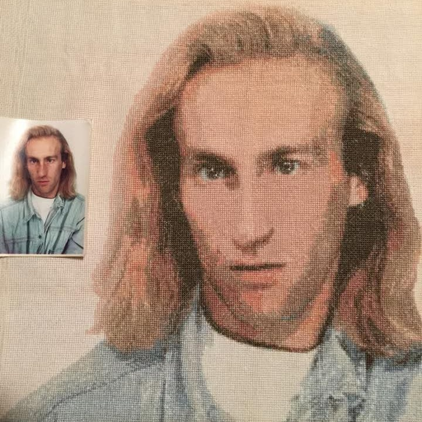

Trabajos realizados
Ejemplos reales

📷 Foto original

🧵 Resultado bordado


◆ Sobre los patrones en B/N: El patrón impreso tiene símbolos en negro sobre fondo blanco para facilitar su lectura. La fotografía y el bordado resultante conservan todos sus colores reales. También hacemos patrones para bordar en escala de grises con resultado final en B/N.